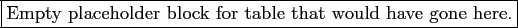

Now that you've successfully run your first model instances, in this chapter I provide detailed explanations regarding the features of qtcm. I present these explanations in a documentary rather than didactic fashion; my goal is to document how the features work. More details are given in the code docstrings. At the end of the chapter, in Section 4.10, I provide a few cookbook ideas/examples of ways to use the model.
An instance of a Qtcm model is created in qtcm the same way you create an instance of any class. For instance, to instantiate two Qtcmmodels, model1 and model2, I type the following:
| from qtcm import Qtcm
model1 = Qtcm(compiled_form='full') model2 = Qtcm(compiled_form='parts') |
In the above example, model1 uses the compiled QTCM1 model that runs the model (essentially) using the Fortran driver, while model2 uses the compiled QTCM1 model where execution order and content all the way down to the atmospheric timestep level is controlled by Python run lists. (Section 4.4 has more details about the difference between compiled forms.)
For each instance of Qtcm, copies of all needed extension modules (e.g., .so files) are copied to a temporary directory that is automatically created by Python. The full path name of that directory is saved in the instance attribute sodir. These extension modules are then associated with the specific instance through private instance attributes, and thus every instance of Qtcm has its own separate variable and name space on both the Fortran and Python sides.4.1The temporary directory and all of its contents are deleted when the model instance is deleted.
On instantiation, Qtcm instances set all scalar field variables to their default values as given in the submodule defaults (and listed in Section A.1), and assign the fields as instance attributes. The instance attribute init_with_instance_state is set to True by default, unless overridden on instantiation.
In the pure-Fortran QTCM1, there are three broad classes of initialized variables:
For qtcm, interfaces were built so that all classes of initialized variables that could be user-controlled are accessible and changeable at the Python-level. For qtcm, the set of variables that could be changed is also expanded, to include not just the first and second classes of pure-Fortran QTCM1 initialized variables. This was done to make qtcmmore flexible. All variables that can be passed between the compiled QTCM1 model and Python model levels are called field variables, and are described in detail in Section sec:field.variables.
As it happens, all the namelist-set variables are scalars. In the pure-Fortran QTCM1, those variables are given default values prior to reading in of the namelist. To duplicate this functionality, on model instantiation, all scalar fields are set to their default values as given in the submodule defaults and listed in Section A.1. Most of the default values in defaults are the same as in the pure-Fortran QTCM1, but there are a few differences.4.2This setting of scalar defaults is the same for both compiled_form='full' and compiled_form='parts' instances. Of course, all qtcm fields are user-controllable, both via keyword input parameters at model instantiation as well as through direct manipulation of the instance attribute that stores the field variable.
The pure-Fortran QTCM1 initialized prognostic variables and right-hand sides are set in the Fortran subroutine varinit. Their they are read-in from a restart file or, as default, set by assignment. In qtcm, the same variables are initialized by a Qtcminstance method of the same name, varinit, for the case when compiled_form='parts'. For the case of compiled_form='full', the compiled QTCM1 subroutine that is the same as in the pure-Fortran case is used, and that routine is inaccessible at the Python level. See Section 4.5.5's listing of snapshot variables, which also includes the prognostic variables and right-hand sides that are set in varinit (both Fortran and Python).
The qtcm package is a Python wrap of the Fortran routines that make up QTCM1. The wrapping layer adds flexibility and functionality, but at the cost of speed. Thus, I created two types of extension modules from the Fortran QTCM1 code, one which permits very little control over the compiled Fortran routines at the Python level, and one that allows the Python-level to control model execution in the compiled QTCM1 model all the way down to the atmospheric timestep level.4.3The former extension module corresponds to compiled_form='full' and the latter extension module to compiled_form='parts'.
For compiled_form='full', the compiled portion of the model encompasses (nearly) the entire QTCM1 model as a whole. Thus, the only compiled QTCM1 model modules or subroutines that Python should interact with is the driver routine (which executes the entire model) and the setbypy module (which enables communication between the compiled model and the Python-level of model fields.4.4
For compiled_form='parts', the compiled portion of the model does not encompasses the model as a whole, but rather is broken up into separate units (as appropriate) all the way down to an atmosphere timestep. Thus, compiled QTCM1 model modules/subroutines that are accessible at the Python-level include those that are executed within an atmosphere timestep on up.
Because the difference in compiled forms fundamentally affects how the Qtcm instance facilitates Python-Fortran communication, this attribute must be set on instantiation via a keyword input parameter.
In the rest of this section, to avoid being verbose, when I write 'full', I mean the situation where compiled_form='full'. Likewise, when I write 'parts', I mean the situation where compiled_form='parts'.
For a model run of this case, the Qtcm instance will initialize the model using the Fortran varinit subroutine in the compiled QTCM1 model. This subroutine does the following:
Thus, if day0=-1, month0=-1, year0=-1 is input into the model (say from a namelist) and mrestart=0, the model will start running from year 1, month 1, day 1, and dateofmodel at the exit of subroutine varinit will equal its compiler-set default. If day0=14, month0=3, year0=11, and mrestart=0 on input into the model, the model will start running from year 11, month 3, day 1, and dateofmodel at the exit of subroutine varinit will equal its compiler-set default.
Note that dateofmodel can thus be inconsistent with month0 and year0 at the exit of subroutine varinit.
This behavior with respect to initializing the start date is different than in QTCM1 versions 1.0 and 2.1. Please see the source code from those earlier QTCM1 versions for details.
For 'parts' model, the methodology of how initialized prognostic variables, right-hand sides, and start date related variables are set is controlled by the Qtcm instance attribute/flag init_with_instance_state. The initialization is (mostly) executed in the Python varinit method in the following way:
Since the init_with_instance_state=Falsecase is mainly described by the initialization method for the 'full' case, I refer the reader to Section 4.4.1. For the case of init_with_instance_state is True, however, the task is more complicated. Specifically, for that case, initialization includes the following:
As a result, for init_with_instance_state is True, the way you indicate to the model that a run session is a brand-new run is by setting, before the run_session method call, dateofmodel to a value less than or equal to 0, and day0, model0, and year0 to the day you want the model to begin the run session. To indicate to the model you wish to continue a run, set dateofmodel to the day before you want the model to start running from.
Examples:
After initialization, the second major difference between a 'full' and 'parts' model is how and when communication between the Python and Fortran levels can occur. For the 'full'case, except for the passing in and out of variables before and after a run session, all variable passing and subroutine calling happens in the compiled QTCM1 model, with no control at the Python level. For the 'parts' case, variables can be passed between the Python and Fortran-levels at all levels down to the atmospheric timestep, and many Fortran QTCM1 subroutines can be called from the Python-level.
For all compiled_form cases, variables are passed back and forth between the Python Qtcm instance level and the compiled QTCM1 model Fortran-level using the Qtcminstance methods get_qtcm1_item and set_qtcm1_item:4.5
The set_qtcm1_item method has two calling forms, one with one argument and the other with two arguments:
Some compiled QTCM1 model variables are not in a state where they can be set. An example is a compiled QTCM1 model pointer variable, prior to the pointer being associated with a target (an attempt to set would yield a bus error). In such cases, the set_qtcm1_item method will throw a FieldNotReadableFromCompiledModel exception, nothing will be set in the compiled QTCM1 model, and the Python counterpart field variable (if it previously existed) would be left unchanged.4.6
Examples, typed in at a Python prompt, and assuming that model is a Qtcm instance:
All compiled QTCM1 model subroutines that can be called (except driver and varptrinit) are in the setbypy or wrapcall modules of the Qtcm instance private attribute __qtcm. (On Qtcm instance instantiation, __qtcm is set to the .so extension module that is the compiled QTCM1 Fortran model.) Thus, to call wmconvct in wrapcall at the Python-level, just type model.__qtcm.wrapcall.wmconvct() (where modelis a Qtcm instance). For driver and varptrinit, these subroutines are not contained in a __qtcm module, and thus can be called directly (e.g., just type model.__qtcm.driver()). See Sections 6.3.1 and 6.3.2 for more information on the setbypy and wrapcall modules.
For the 'full' case, the only compiled QTCM1 model subroutine you can usefully call during a run session is driver. For the 'parts' case, while you can essentially call any subroutine given in a run list, you usually will not directly call a compiled QTCM1 model subroutine but will instead call it through including it in a run list. For example, if you have the following run list in a 'parts' model:
| [ 'qtcminit', '__qtcm.wrapcall.woutpinit' ] |
To enable restart of a model run, the pure-Fortran QTCM1 model writes out a restart file with the state of the prognostic variables and select right-hand sides at that point in the run (for a list of the variables, see Section 4.5.5). This binary file can then be read in by later model runs. The Fortran mrestart flag is passed in via a namelist; if mrestartis 1, the run uses the restart file (named qtcm.restart).
One of the problems with using the restart file to do a continuation run is that the continuation run will not be perfect. In other words, a 15 day run followed by a 25 day run based on the restart file generated at the end of the 15 day run will not give the exact same output as a continuous 40 day run.
For a Qtcm instance, in contrast to the pure-Fortran QTCM1, more than one method of continuation is available. Thus, for a continuation run, you need to tell the model ``continue from what?'' The Qtcm class provides three choices for restart/continuing a run:
Restart/continuation methods 1 and 2 both suffer from the same problem as the pure-Fortran QTCM1 restart process: They do not produce perfect restarts (see Section sec:puref90.restart for details). In this section, I discuss the restart/continuation options for each compiled_form option.
Methods 1 and 2 are best used when making a run session from a newly instantiated Qtcm instance. Method 3 is best used when executing a run session using a Qtcm instance that has already gone through at least one run session. Regardless of which method you use, however, please note that anytime you execute a run session using a Qtcm instance that already has made a previous run session, some variables cannot be updated between run sessions. This feature is most noticeable with the output filename, and occurs because the name persists in the compiled QTCM model, and is stored in the extension module (.so files in sodir) associated with the instance. If you wish to control all variables possible from the Python level (including output filename), you need do the run session from a new model instance.
The only option for restart when using compiled_form='full' model instances is method 1, to use a QTCM1 restart file.4.7To use this option, the value of the mrestart attribute must equal 1, the restart file must be named qtcm.restart, and the restart file must be in the current working directory. As with the pure-Fortran QTCM1 restart process, this method does not produce perfect restarts.
For the compiled_form='parts' case, all three restart/continuation methods described in Section 4.5.2 are available.
To use the QTCM1 restart file mechanism, not only must the mrestart attribute have a value to 1, but the init_with_instance_state flag also has to be False, otherwise the mrestart attribute value will be ignored. As with the pure-Fortran QTCM1 restart process, this method does not produce perfect restarts.
You can take snapshots of the model state of a Qtcm instance by the make_snapshot instance method. This snapshot saves a copy of all the variables saved to a QTCM1 restart file (see Section 4.5.5 for the full list of fields), which then can be passed to other Qtcm instances for use in other run sessions.
The key difference between this method and method 3 (described below) is that run_session calls using the snapshot are done without the cont keyword input parameter (by default, cont is False). If the cont keyword is not False, it says the run session is a continuation run that uses the state of the compiled QTCM1 model for all variables that are not specified at, and read-in from, the Python level. If the cont keyword is False, the run session initializes as if it were a new run.
See Section 3.4.4 for details and an example of using snapshots to initialize a run session. Note that as with the pure-Fortran QTCM1 restart process, this method does not produce perfect restarts.
This method is used when you want to make a run session that is a ``true'' continuation run, i.e., one that uses the current state of the compiled QTCM1 model for all variables that are not read-in from the Python level (remember that Qtcm instances hold a subset of the variables defined at the Fortran level). The key reason to use this method for a continuation run session is that the continuation is byte-for-byte the same (if no fields are changed) as if the run just went straight on through. Thus, the continuation would be perfect: A 15 day run followed by a 25 day run using the same Qtcm instance with the cont keyword will give the exact same output as a continuous 40 day run. This is not the case when making a new instance and passing a restart file or a snapshot, because a separate extension module is used for those new instances.
Control of this method is accomplished through the contkeyword input parameter to the run_session method and the init_with_instance_state attribute of a Qtcm instance:
(Note that the cont keyword has no effect if compiled_formis 'full'. The default value of cont in a run_session call is False. The value of keyword contis stored as private instance attribute _cont, in case you really need to access it elsewhere; see Section 6.7.3 for more details).
The example described in Section 3.4.3 is an example of method 3 in the list above: The second run session is continued from the state of model, with the values of model's instance variables overriding any values in the compiled QTCM1 model in initializing the second run session.
This method has a few caveats worthy of note:
The snapshot dictionary (briefly described in Section 3.4.4), saved as the Qtcm instance attribute snapshot, and generated by the method make_snapshot, saves the current state of the following instance field variables:
| Field | Shape | Units | Description |
|---|---|---|---|
| T1 | (64, 44) | K | |
| Ts | (64, 42) | K | Surface temperature |
| WD | (64, 42) | ||
| dateofmodel | Date of model coded as an integer as yyyymmdd | ||
| psi0 | (64, 43) | ||
| q1 | (64, 44) | K | |
| rhsu0bar | (3,) | ||
| rhsvort0 | (64, 42, 3) | ||
| title | A descriptive title | ||
| u0 | (64, 44) | m/s | Barotropic zonal wind |
| u0bar | |||
| u1 | (64, 44) | m/s | Current time step baroclinic zonal wind |
| v0 | (64, 43) | m/s | Barotropic meridional wind |
| v1 | (64, 43) | m/s | |
| vort0 | (64, 42) |
These are the same variables saved to a QTCM1 restart file, and so a snapshot duplicates the restart functionality in the Python environment, but with more flexibility. Since the snapshotdictionary is a Python variable like any other, you can manipulate it and alter it to fit any condition you wish.
Section 3.6 provides an introduction to the role and use of run lists. A run list is a list of methods, Fortran subroutines, and other run lists that can be executed by the Qtcm instance run_list method. Run lists are stored in the Qtcm instance attribute runlists, which is a dictionary of run lists. The names of run lists should not be preceeded by two underscores (though elements of a run list may be very private variables), nor should names of run lists be the same as any instance attribute. Run lists are not available for compiled_form='full'.
The run_list method takes a single input parameter, a list, and runs through that list of elements that specify other run lists or instance method names to execute. Methods with private attribute names are automatically mangled as needed to become executable by the method. Note that if an item in the input run list is an instance method, it should be the entire name (not including the instance name) of the callable method, separated by periods as appropriate.
Elements in a run list are either strings or 1-element dictionaries. Consider the following example, where model is a Qtcminstance, and run_list is called using mylist as input:
| model = Qtcm(...)
mylist = [ {'varinit':None}, 'init_model', '__qtcm.driver', {'set_qtcm1_item': ['outdir', '/home/jlin']} ] model.run_list(mylist) |
The first element in mylist refers to a method that requires no positional input parameters be passed in (as shown by the None). The second and third elements in mylist also refers to methods that require no positional input parameters be passed in. The last element in mylist refers to a method with two input parameters. Note that while I use the term ``method'' to describe the elements, the strings/keys do not have to be only Python instance methods. The second element, for instance, refers to another run list, and the third element refers to a compiled QTCM1 model subroutine (note the __qtcm attribute).
When the run_list method is called, the items in the input run list are called in the order given in the list. For each element, the run_list method first checks if the string or dictionary key name corresponds to the key of an entry in the Qtcm instance attribute runlists. If so, run_listis called using that run list (i.e., it is a ``recursive'' call). If the string or dictionary key name does not refer to another run list, the run_list method checks if the string or dictionary key name is a method of the Qtcm instance, and if so the method is called. Any other value throws an exception.
If input parameters for a method are of class Field, the run_list method first tries to pass the parameters into the method as is, i.e., as Field object(s). If that fails, the run_list method passes its parameters in as the valueattribute of the Field object.
If you want a variable that is being passed into a run list to be continuously updated, you have to set the parameter in the run list to a Field instance that is a Qtcm instance attribute, not just to the value of the field variable (or to a non-Fieldobject). Otherwise, subsequent calls to that run list element will not use the updated values as input parameters.
For instance, if you had a run list element:
| {'__qtcm.timemanager':[model.coupling_day,]} |
You can get around this feature by setting Qtcm instance attributes that will change with model execution to Fieldinstances, and then referring to those attributes in the parameter list in the run list element. In that case:
| {'__qtcm.timemanager':[model.coupling_day,]} |
When run_list, encounters a calling input parameter that is a Field object, it will first try to pass the entire Field object to the method/routine being called. If that raises an exception, it will then try to pass just the value of the entire Field object. This is done to enable run_listto be used for both pure-Python and compiled QTCM Fortran model routines. Fortran cannot handle Field objects as input parameters, only values.
Table 4.3 shows all standard run lists stored in the runlists attribute upon instantiation of a Qtcm instance.
|  |
The term ``field'' variable refers to QTCM1 model variables that are accessible at both the compiled Fortran QTCM1 model-level as well as the Python Qtcm instance-level. Field variables are all instances of the Field class (though non-field variables can also be instances of Field).
Section 3.3 gives a brief introduction to the attributes and methods in a Field instance. A nitty gritty description of the class is found in its docstrings.
To create a Field instance whose value is set to the default, instantiate with the field id as the only positional input argument. Thus:
| foo = Field('lastday') |
will return foo as a Field instance with foo.valueset to the value listed in Section A.1. The value of all Field instances upon creation are specified in the defaults submodule of package qtcm, and listed in Sections A.1 and A.2.
To create Field instances whose attributes are set different from their defaults, you can specify the different settings in the instantiation parameter list, or change the attributes once the instance is created. See the Field docstring for details.
Field variables include both model parameters that do not change for a Qtcm instance as well as prognostic variables that do change during model integration. As a result, many field variables have values different from the default values listed in Sections A.1 and A.2. In this section, I list the initial values of all field variables. The ``initial'' values are the settings for Qtcmfield variables execution of the run_session method, but prior to cycling through an atmosphere-ocean coupling timestep. This is in contrast to ``default'' values, which the field variables are given on instantiation, if no other value is specified. Numerical values are rounded as per the conventions of Python's %g format code.
For the fields that give the input/output directory names, and the run name, the entry ``value varies'' is provided in the ``Value'' column.
| Field | Value | Units | Description |
|---|---|---|---|
| SSTdir | value varies | Where SST files are | |
| SSTmode | seasonal | Decide what kind of SST to use | |
| VVsmin | 4.5 | m/s | Minimum wind speed for fluxes |
| bnddir | value varies | Boundary data other than SST | |
| dateofmodel | 10101 | Date of model coded as an integer as yyyymmdd | |
| day0 | 1 | dy | Starting day; if |
| dt | 1200 | s | Time step |
| eps_c | 0.000138889 | 1/s | 1/tau_c NZ (5.7) |
| interval | 1 | dy | Atmosphere-ocean coupling interval |
| it | 1 | Time of day in time steps | |
| landon | 1 | If not 1: land = ocean with fake SST | |
| lastday | 0 | dy | Last day of integration |
| month0 | 1 | mo | Starting month; if |
| mrestart | 0 | =1: restart using qtcm.restart | |
| mt0 | 1 | Barotropic timestep every mt0 timesteps | |
| nastep | 1 | Number of atmosphere time steps within one air-sea coupling interval | |
| noout | 0 | dy | No output for the first noout days |
| nooutr | 0 | dy | No restart file for the first nooutr days |
| ntout | -30 | dy | Monthly mean output |
| ntouti | 0 | dy | Monthly instantaneous data output |
| ntoutr | 0 | dy | Restart file only at end of model run |
| outdir | value varies | Where output goes to | |
| runname | value varies | String for an output filename | |
| title | value varies | A descriptive title | |
| u0bar | 0 | ||
| visc4x | 700000 | m |
Del 4 viscocity parameter in x |
| visc4y | 700000 | m |
Del 4 viscocity parameter in y |
| viscxT | 1.2e+06 | m |
Temperature diffusion parameter in x |
| viscxq | 1.2e+06 | m |
Humidity diffusion parameter in x |
| viscxu0 | 700000 | m |
Viscocity parameter for u0 in x |
| viscxu1 | 700000 | m |
Viscocity parameter for u1 in x |
| viscyT | 1.2e+06 | m |
Temperature diffusion parameter in y |
| viscyq | 1.2e+06 | m |
Humidity diffusion parameter in y |
| viscyu0 | 700000 | m |
Viscocity parameter for u0 in y |
| viscyu1 | 700000 | m |
Viscocity parameter for u1 in y |
| weml | 0.01 | m/s | Mixed layer entrainment velocity |
| year0 | 1 | yr | Starting year; if |
| ziml | 500 | m | Atmosphere mixed layer depth |
| Field | Shape | Max | Min | Units | Description |
|---|---|---|---|---|---|
| Evap | (64, 42) | 1502.56 | 223.552 | ||
| FLW | (64, 42) | 74.5136 | 74.5136 | ||
| FLWds | (64, 42) | 206.424 | 206.424 | ||
| FLWus | (64, 42) | 429.708 | 429.708 | ||
| FLWut | (64, 42) | 148.771 | 148.771 | ||
| FSW | (64, 42) | 147.767 | 0 | ||
| FSWds | (64, 42) | 410.895 | -6.99713 | ||
| FSWus | (64, 42) | 356.831 | -4.49983 | ||
| FSWut | (64, 42) | 332.431 | 0 | ||
| FTs | (64, 42) | 930.115 | 138.383 | ||
| Qc | (64, 42) | 0 | 0 | K | Precipitation |
| S0 | (64, 42) | 534.264 | 0 | ||
| STYPE | (64, 42) | 3 | 0 | Surface type; ocean or vegetation type over land | |
| T1 | (64, 44) | -100 | -100 | K | |
| Ts | (64, 42) | 295 | 295 | K | Surface temperature |
| WD | (64, 42) | 350 | 0 | ||
| WD0 | (4,) | 500 | 0 | Field capacity SIB2/CSU (approximately) | |
| arr1 | (64, 42) | 0 | 0 | Auxiliary optional output array 1 | |
| arr2 | (64, 42) | 0 | 0 | Auxiliary optional output array 2 | |
| arr3 | (64, 42) | 0.138699 | 0.138699 | Auxiliary optional output array 3 | |
| arr4 | (64, 42) | 0 | 0 | Auxiliary optional output array 4 | |
| arr5 | (64, 42) | 0 | 0 | Auxiliary optional output array 5 | |
| arr6 | (64, 42) | 0 | 0 | Auxiliary optional output array 6 | |
| arr7 | (64, 42) | 0 | 0 | Auxiliary optional output array 7 | |
| arr8 | (64, 42) | 0 | 0 | Auxiliary optional output array 8 | |
| psi0 | (64, 43) | 0 | 0 | ||
| q1 | (64, 44) | -50 | -50 | K | |
| rhsu0bar | (3,) | 0 | 0 | ||
| rhsvort0 | (64, 42, 3) | 0 | 0 | ||
| taux | (64, 42) | 0 | 0 | ||
| tauy | (64, 42) | 0 | 0 | ||
| u0 | (64, 44) | 0 | 0 | m/s | Barotropic zonal wind |
| u1 | (64, 44) | 0 | 0 | m/s | Current time step baroclinic zonal wind |
| v0 | (64, 43) | 0 | 0 | m/s | Barotropic meridional wind |
| v1 | (64, 43) | 0 | 0 | m/s | |
| vort0 | (64, 42) | 0 | 0 |
Section 4.4.3 discusses the differences between how the 'full' and 'parts' compiled forms pass field variables between the Python and Fortran-levels. That discussion gives a detailed description of the methods used for passing fields to and from the Python and Fortran-levels (i.e., the get_qtcm1_item and set_qtcm1_item methods).
Please note the following regarding field variables as you pass them back and forth between the Python and Fortran-levels:
Normally, Python arrays have a different dimension order than Fortran arrays. While Fortran arrays are dimensioned (col, row, slice), with adjacent columns being contiguous, then rows, and then slices, Python arrays are dimensioned (slice, row, col), with adjacent columns being contiguous, then rows, and then slices. Based on this, you would think that everytime you passed an array between the Python and Fortran-levels you would need to transpose the array.
Thankfully, we don't have to do this because f2py handles array dimension order transparently so we can refer to each element the same way whether we're in Python or Fortran. Thus, the array Qc in Fortran is dimensioned (longitude, latitude), (64,42) by default, and the Python Qtcm instance attribute Qchas a value attribute also dimensioned (longitude, latitude), (64,42) by default. And at both the Fortran and Python-levels, the first longtude, second latitude element is referred to as Qc(1,2).
In contrast, however, netCDF output saved by the compiled QTCM1 model and read into Python (using the Scientific package) is not in Fortran array order. Arrays read from netCDF output into Python are in Python array order, and are dimensioned (latitude, longitude) or (time, latitude, longitude). The Qtcmroutines that manipulate netCDF data (e.g., plotm), however, automatically adjust for this, so you only need to be aware of this when reading in output for your own analysis (see Section 4.8).
Section 3.7 gives an overview of how to use qtcm model output to netCDF files.
All netCDF array output is dimensioned (time, latitude, longitude) when read into Python using the Scientific package. This differs from the way Qtcm saves field variables, which follows Fortran convention (longitude, latitude). Thus, the shapes in Section 4.7.2, Appendix A, etc., are not the shapes of arrays read from the netCDF output. See Section 4.7.4 for a discussion of why there is this discrepancy.
Because netCDF files allow you to specify an ``unlimited'' dimension, it is possible to close a netCDF file, reopen it, and add more slices of data to the file. Thus, continuous Qtcm run sessions (i.e., those that use the cont keyword input parameter in the run_session method) will automatically append output to the netCDF output files.
Field variables with ghost latitudes, such as u1, on the Python and Fortran ends are always the full variables (i.e., including the ghost latitudes). The ghost latitudes are not written to the netCDF output files, however. See the QTCM1 manual [4] for details about ghost latitude structure.
Qtcm instances have a few built-in tools to visualization model output. These are briefly described in Section 3.7.2. Note that the plotm method is linked to a specific Qtcminstance. Do not use plotm outside of the instance it is linked to. It must also be used only after a successful run session (i.e., not in the middle of a run session).
A few miscellaneous items/issues about the model:
This cookbook of a few ways to use the model is arranged by science tasks, i.e., certain types of runs we want to do. For some of the examples below, I assume that the dictionary inputs is initially defined as given in Figure 4.1. All examples assume that from qtcm import Qtcm has already been executed.
| inputs['init_with_instance_state'] = False
model = Qtcm(**inputs) model.run_session() |
Of course, you can use pre-processor directives and shell scripts to accomplish the same functionality seen in Figure 4.3 using just Fortran. The Python solution, however, shortcuts the compile/linking step, and enables you to easily do run time swapping between subroutine choices based upon run time calculated tests (see Figure 4.2 for an example of such tests).